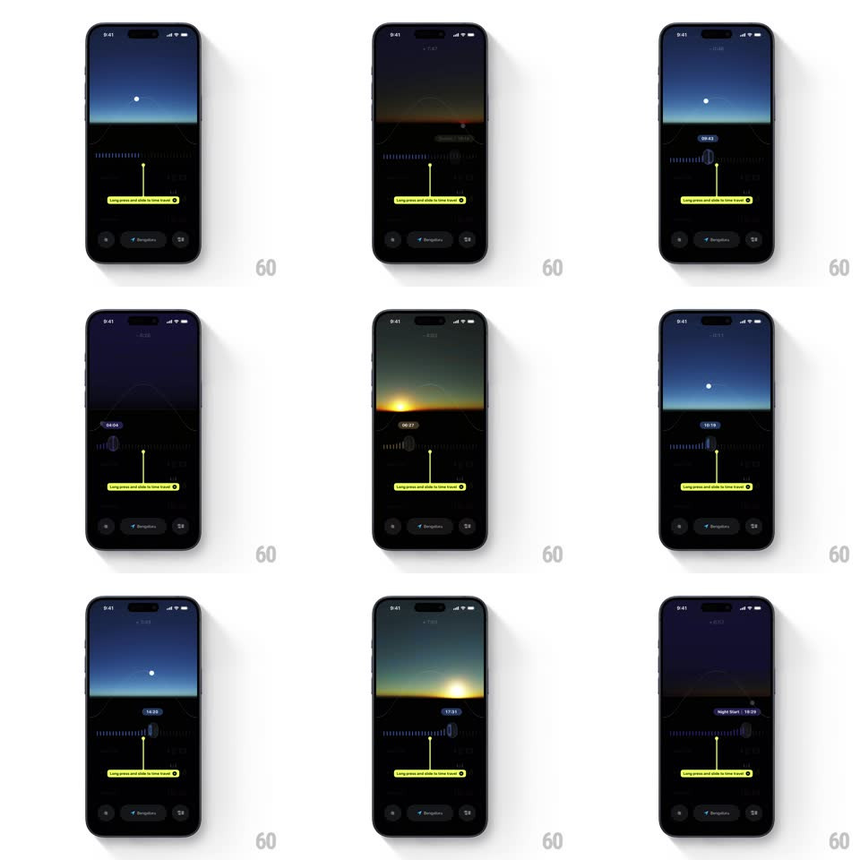

Media
Frame-by-frame

Rebuild this interaction 1:1: Lumy's time-travel slider - long-pressing the yellow handle on the hour ruler activates scrubbing, and dragging it sweeps the sky preview through dawn, noon, dusk, and sunset while a floating time chip tracks the hour.

Rebuild this interaction 1:1: Lumy's time-travel slider - long-pressing the yellow handle on the hour ruler activates scrubbing, and dragging it sweeps the sky preview through dawn, noon, dusk, and sunset while a floating time chip tracks the hour.
## Integration
Integration: stack-agnostic spec - springs given as stiffness/damping, timed motions as duration + curve; map every value to your framework and animation library of choice.
## Scene
Dark screen: a sky preview panel up top (night starfield, dawn glow, bright noon, orange sunset), a horizontal ruler with tick marks and a vertical yellow handle ("Long press and slide to time travel" hint), a floating time chip (04:42, 06:15, 07:11, 12:30, 14:32, "Sunset 18:19"), and three control buttons at the bottom.
## Motion spec
Pattern: scrub-driven scene crossfade, gesture-driven.
- Activate: long-press grows the handle (scale 1 -> 1.15, 150ms) with haptic; the hint dims.
- Scrub: dragging moves the handle 1:1 along the ruler; the time chip follows above it, updating the hour live (tick marks scroll under it).
- Sky: the preview crossfades through solar states tied to handle position - night fades to dawn glow (300ms blends), noon brightens, sunset warms to orange; sun/moon dot tracks an arc across the panel.
- Release: the handle settles (scale back, 150ms) and the nearest labeled event (e.g. Sunset 18:19) snaps into the chip if within 10 minutes (200ms).
## Calibration
- The sky is driven by position, not time - scrubbing back and forth reverses it exactly.
- The chip never detaches from the handle; it rides above it.
## Reduced motion
Sky swaps states with 200ms fades; sun arc removed.
## Don't miss
- The hint pill ("Long press and slide to time travel") is the onboarding cue - it dismisses after first use.
- Named solar events (Sunset, Golden hour) get special labels in the chip, not just clock times.